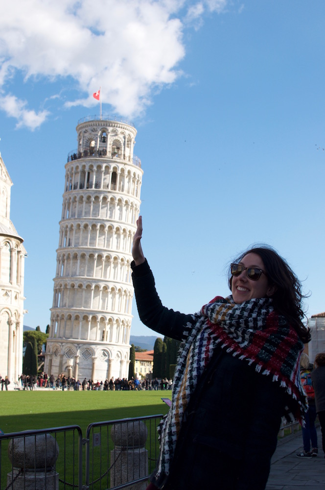
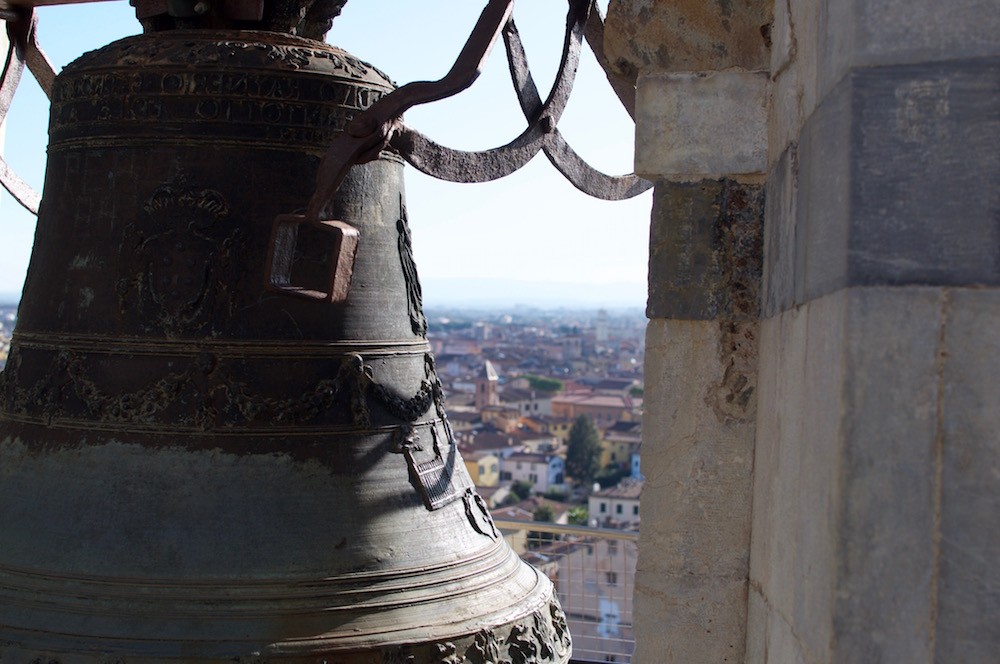

Pisa
During my trip to Italy between Christmas and New Year with my husband, parents and two friends we took a day trip to Pisa. The six of us were in Florence, and Pisa is only an hour train journey away, so we couldn't miss the opportunity to prop up the leaning tower. We checked the italiarail.com website and saw that the tickets were from €10 each direction. I'm not one for prebooking train tickets while on holiday, I do when I'm in the UK or if there are infrequent trains, but after interrailing around Europe, I prefer making the most of the freedom that you get with trains. We checked the times of the trains and saw that one or two trains depart Firenze Santa Maria Novella train station for Pisa every hour. The first morning in Florence, we got up and wandered down to the station. We checked the train timetable and purchased our tickets at the machines, once you switch the language option to English it is plain sailing. It turned out to be cheaper to buy at the machine, just €8. Make sure that you validate (stamp) your ticket before boarding the train. The machines for stamping the tickets are at the ends of the platform and are usually yellow or green. If you don't do this, you may be fined.
We caught the 9am train, arrived at 10am, had a nice stroll through the small quiet town of Pisa and arrived at the Piazza dei Miracoli (square of miracles) around 10.30am. I would recommend going in the morning to avoid the crowds and to guarantee tickets up the tower. Already starting to get a little busy, we went to the ticket booth and bought the first available time slot for climbing the Leaning Tower of Pisa, which was 12.30pm. This allowed for time to check out the other three buildings within the Piazza dei Miracoli. The cathedral complex is made up of the Duomo di Pisa (Pisa cathedral), the Pisa Baptistry, the Camposanto Monumentale (monumental cemetery) and of course the Campanile (the leaning tower). It's free to go inside the cathedral, €18 to go up the tower and you can pay up to €26 if you would also like entrance to the baptistery, cemetery and the nearby Sinopie museum. We just went inside the cathedral, spent time positioning ourselves to hold up the tower while laughing and cdsc_0435hatting to other tourists doing the same. We had just enough time for a quick espresso before lining up at the bell tower entrance at our allocated time. There were quite a few people in line who hadn't already purchased the tickets at the ticket office or had not remembered to store their bags in the lockers, without these, they were refused entrance. We had stored our bags immediately after buying the tickets, and had been walking around with only our essentials in our pockets.

Holding up the tower.
Much to our surprise the Leaning Tower of Pisa is hollow, when at the bottom you can see the sky, and the staircase is enclosed and runs within the walls. Climbing the steps is a very peculiar experience, you can feel the tower's tilt as you climb, slowly getting harder and then easier as you walk into and out of the lean. There are 273 steps, and for those who need to stop and catch their breath, there are pockets of space to take a breather. Once at the top, the view is breathtaking and even for myself and my father who suffer from a fear of heights, it wasn't too nerve racking. We were less brave about looking down through the centre of the tower to the bottom though. At the top you can have a rest on the steps, take in the view and examine the large bells.
Once descended, it was time for lunch. We had read online to avoid the overpriced restaurants near Piazza dei Miracoli, so we selected a restaurant near the river called Vineria di Piazza for its reasonable price and craft beer selection. After getting our fix of delicious gnocchi, tiramisu and ale in the welcoming restaurant, it was time to return to Florence. The train journey between Pisa and Florence is very picturesque; vibrant green hills with scatterings of quaint Tuscan villages.

From behind the tower's bell.
We all said how strange it felt to see the tower in real life, such an iconic monument that we had seen so many times in photographs and finally getting to see it for ourselves didn't seem real. The area around the tower was atmospheric with people laughing and smiling, clear blue skies and even a few horses. It was an unforgettable day which I was so lucky to share with my family and friends.
--Emily, 11 January 2017